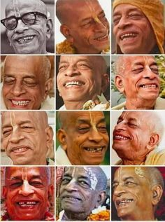

The intention was simple, and still is: saatvik food for everyone, cooked the friendly way it is cooked at home.
What we cook, and what we leave out
Every plate is fully saatvik. No onion, no garlic — not in a special dish, not on request, not ever. Everything is made fresh in our own kitchen.
Saatvik cooking is not about restriction for its own sake. In the Vedic understanding, food carries a quality that passes into the person who eats it. Saatvik food is the food of clarity and calm — the food that leaves you settled rather than agitated or heavy. That is what we want to hand across the counter, so it is what we cook, the way we would cook for our own family.
Before anything is served, it is offered to Lord Krishna. Food offered this way is called prasadam — literally, mercy. It is the same rice and dal you would recognise anywhere, and it is also, to us, something that has been through an act of devotion before it reaches your plate. You are welcome to receive it simply as a good meal. Many people do. It is offered either way.
Come for the stuffed parota and leave having thought
about nothing but the parota — that is a perfectly good visit.
Who we are
We are ISKCON devotees.
What ISKCON teaches, and what we ourselves follow, comes down to us through the Brahma-Madhva-Gaudiya Sampradaya. This is not a style of cooking or a way of running a cafe — it is the line our teachers belong to, and so it is the line we belong to. The food follows from who we are, not the other way round.
A sampradaya is a line of teachers — knowledge handed from teacher to student, person to person, without a break. The idea is unglamorous and practical: what is passed down hand to hand stays intact, while what each generation reinvents for itself drifts. If you want to know what was actually taught, you follow the chain back.
The name of ours carries its own history, in three parts.
The line begins with Krishna Himself, who spoke the truth into the heart of Brahma, the first created being — the first teacher, receiving from the source. From Brahma it passed to the sage Narada, and from Narada to Vyasa, who compiled the Vedic literature.
Centuries later, in Udupi on the Karnataka coast, Sripada Madhvacharya received that line and gave it rigour. Against the philosophies of his day, he argued for a truth that many find intuitive but that was then contested: that the soul and God are eternally distinct, and that love between them is therefore real and not a stage to be transcended. He also built the succession into something disciplined enough to survive.
Then, in Bengal — Gauda is its old name — Sri Chaitanya Mahaprabhu appeared, and the line took on its final character. He taught that the highest relationship with God is not awe but love, and that the way to it is open to everyone: the chanting of the holy names, which needs no qualification, no wealth, no birth, no temple. He gave away the most exalted thing he had to whoever would take it. That is the spirit we try to keep in a cafe.

The chain continued through his followers — the Six Goswamis of Vrindavan, then Bhaktivinoda Thakura and Bhaktisiddhanta Saraswati Thakura — and reached Srila Prabhupada, A.C. Bhaktivedanta Swami, who carried it out of India and founded ISKCON, the International Society for Krishna Consciousness. He was in his late sixties, and he went with almost nothing. What he planted is why a cafe like this one exists, and why you can find prasadam in almost any city in the world today.
Krishna · Brahma · Narada · Vyasa · Madhvacharya
— through more than thirty teachers —
Sri Chaitanya Mahaprabhu · the Six Goswamis
Bhaktivinoda Thakura · Bhaktisiddhanta Saraswati Thakura
Srila Prabhupada
Everyone is welcome
You do not need to know any of the above to eat here, and nobody will ask.
Dine in, take away, or order ahead online and collect. And if you are curious, ask. Somebody here will be glad you did.